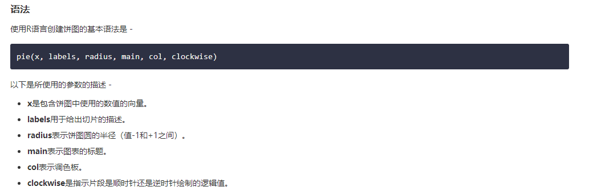

6）饼状图：
R编程语言有许多库来创建图表和图表。 饼图是将值表示为具有不同颜色的圆的切片。 切片被标记，并且对应于每个片的数字也在图表中表示。
在R语言中，饼图是使用pie()函数创建的，它使用正数作为向量输入。 附加参数用于控制标签，颜色，标题等。

示例：
# Create data for the graph.
x <- c(21, 62, 10,53)
labels <- c("London","New York","Singapore","Mumbai")
piepercent<- round(100*x/sum(x), 1)
# Give the chart file a name.
png(file = "city_percentage_legends.jpg")
# Plot the chart.
pie(x, labels = piepercent, main = "City pie chart",col = rainbow(length(x)))
legend("topright", c("London","New York","Singapore","Mumbai"), cex = 0.8,
fill = rainbow(length(x)))
# Save the file.
dev.off()